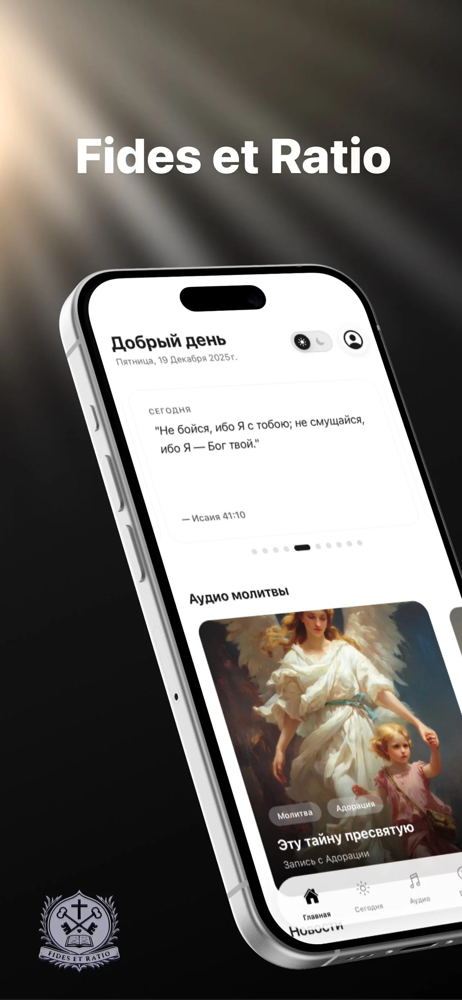

Fides et Ratio
Цифровой дом сообщества.
Мобильная платформа: католический контент, медиа и цифровые инструменты для русскоязычной аудитории.

- Тип продукта
- Мобильная платформа
- Платформа
- iOS
- Роль
- Продуктовая инженерия
- Технологии
- Мобильное приложение, backend, архитектура контента
Задача
Сообществу нужно одно приложение для молитв, проповедей, радио, новостей и вопросов, а не разрозненные источники.
Опыт
- Читать и слушать ежедневные материалы.
- Открывать радио и видео в том же приложении.
- Задавать вопросы через AI-инструменты.
Инженерия
Мобильное приложение, backend, архитектура контента и интеграции.
Запуск
Русская версия в App Store.